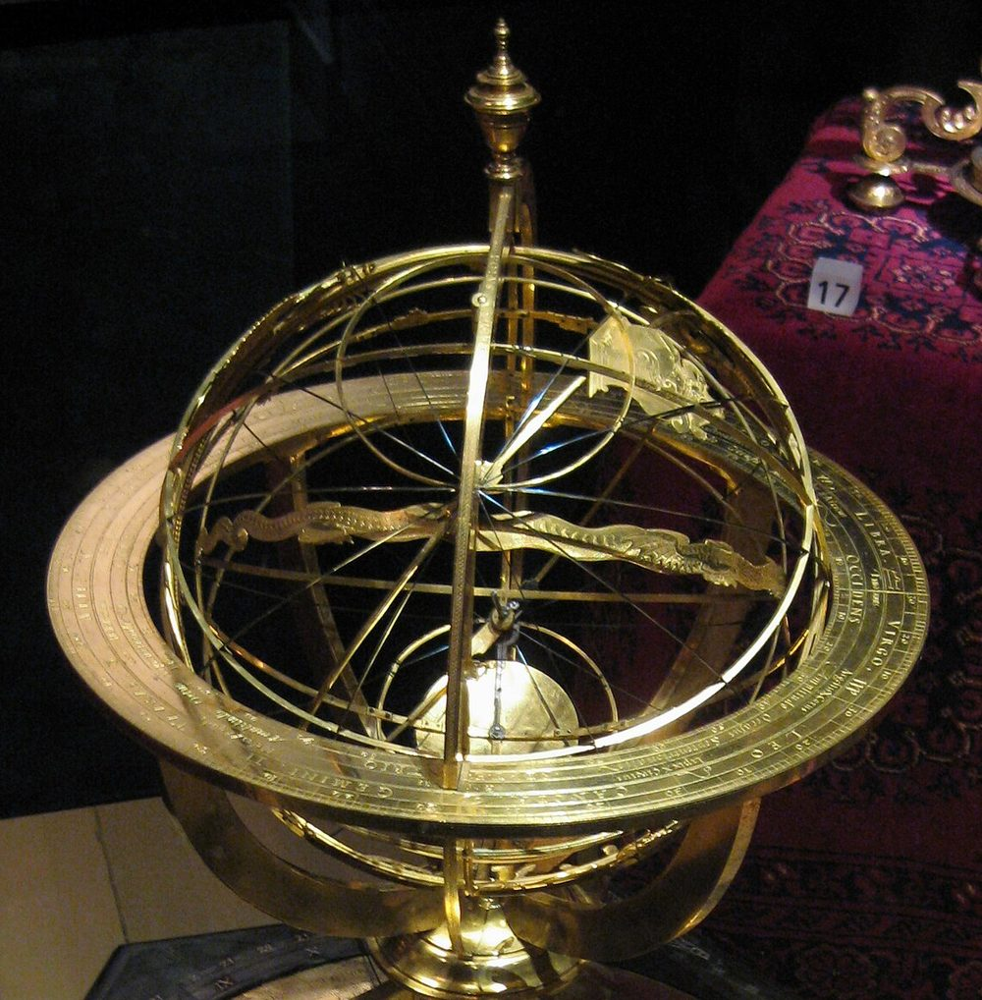

On page 1.1 we described a star by its declination $\delta$ and its hour angle $H$, which grows as the sky turns. That is enough for the fixed stars, but the Sun, the Moon and the planets move among them, and to follow them we need two coordinates for every point of the celestial sphere, and a way to convert between the coordinate systems that astronomers use.
1 · ObservationThe three coordinate systems
Take Aldebaran, the red eye of the Bull, seen from Rome on 1 January 2026 at 20:00 local time (19:00 UT). Depending on what we measure it against, we can give its position in three coordinate systems:
| Measured against | Coordinates | Aldebaran |
|---|---|---|
| the local horizon (compass and quadrant) | azimuth $A$, altitude $a$ | $125.01^\circ$, $53.67^\circ$ |
| the celestial equator: a modern catalogue (2026) | right ascension $\alpha$, declination $\delta$ | $69.354^\circ$ ($4^\text{h}37^\text{m}$), $16.559^\circ$ |
| the ecliptic, the Sun's yearly path (2026) | ecliptic longitude $\lambda$, ecliptic latitude $\beta$ | $70.153^\circ$, $-5.465^\circ$ |
| the ecliptic: Ptolemy's catalogue (AD 137) | ecliptic longitude $\lambda$, ecliptic latitude $\beta$ | $42^\circ 40'$ ($42.667^\circ$), $-5^\circ 10'$ ($-5.167^\circ$) |
The sky of 2026 around Aldebaran, seen looking south, with north up and east to the left, on the equatorial grid.
Ecliptic: the Sun's yearly path. Aldebaran is 16.6° north of the equator but 5.5° south of the ecliptic, the $\delta$ and $\beta$ of the table.
In the figure
- stars
- every star brighter than magnitude 4.6; the larger, the brighter
- stipple
- the Milky Way, drawn as a band about the galactic equator
The horizontal coordinates change all the time: an hour later the star is higher and further south. The equatorial ones stay the same through the night and for years, and only over centuries do they change, together with the ecliptic ones.
Since Ptolemy, Aldebaran's ecliptic longitude has grown by about 26° and its declination has changed by almost 6°, but its ecliptic latitude has moved by only 8′. Ptolemy had noticed that the stars shift parallel to the ecliptic, so that "their positions in latitude with respect to the ecliptic must necessarily remain the same" (Almagest VII 4), and this is why he gave his catalogue in ecliptic coordinates.
2 · ModelCoordinate systems and rotations
What a frame is
To set up coordinates on the celestial sphere, a frame, we make three choices: a great circle (the fundamental circle), one of its two poles, and an origin on the circle. The frame's longitude is then counted along the circle from the origin, and its latitude from the circle towards the pole. In the ecliptic frame they are the ecliptic longitude and latitude.
In vectors, we put $x$ towards the origin, $z$ towards the pole and $y$ at the frame's longitude $90^\circ$, so that the frame is right-handed. A direction at the frame's longitude $l$ and latitude $b$ is then
exactly as for the sky frame of page 1.1. The three coordinate systems of section 1 are frames of this kind, which differ only in these choices:
| Frame | Fundamental circle | Pole | Origin | Coordinates |
|---|---|---|---|---|
| equatorial | the celestial equator | P, north celestial pole | γ, the vernal point | $\alpha$, $\delta$ |
| ecliptic | the ecliptic, the Sun's yearly path | K, north ecliptic pole | γ, the vernal point | $\lambda$, $\beta$ |
| horizon | the horizon | Z, the zenith | the north point | $A$, $a$ |
The equator and the ecliptic cross at two opposite points. One of them, the vernal point γ (also written ♈︎, the sign of Aries), is where the Sun crosses the equator going north at the March equinox, and both frames take it as their origin.


Right ascension is often given in hours, with $24^\text{h} = 360^\circ$ and so $1^\text{h} = 15^\circ$, which makes Aldebaran's $69.354^\circ$ equal to $4^\text{h}37^\text{m}$. Hours are used because the sky turns about $15^\circ$ an hour, so the right ascension in hours is roughly the time between the meridian crossing of γ and that of the star.
Azimuth
The azimuth $A$ is a compass bearing, $0^\circ$ at north, $90^\circ$ at east and $180^\circ$ at south. Seen from the zenith it runs clockwise, the opposite way to $\alpha$ and $\lambda$, which run anticlockwise seen from their poles.
So the azimuth is not simply the longitude in the horizon frame of page 1.1 ($x$ south, $y$ east, $z$ zenith). There north is $-x$ and east is $+y$, so
$$\mathbf s_\text{hor} = \begin{pmatrix} -\cos a \cos A \\ \cos a \sin A \\ \sin a \end{pmatrix}.$$As a check, $A = 0$ gives $(-\cos a, 0, \sin a)$, to the north, and $A = 90^\circ$ gives $(0, \cos a, \sin a)$, to the east. Meeus (ch. 13) counts the azimuth from the south instead, so his value is $A - 180^\circ$.
Changing frames is a rotation
To convert a direction from a frame $F$ to a frame $G$, we need its components along $G$'s axes. These are its dot products with the axes, $s_G^i = \mathbf g_i \cdot \mathbf s$, so if we write $G$'s axes in $F$'s components as the rows of a matrix $M$,
$$\mathbf s_G = M \, \mathbf s_F, \qquad M = \begin{pmatrix} \mathbf g_1^T \\ \mathbf g_2^T \\ \mathbf g_3^T \end{pmatrix}.$$The rows of $M$ are orthonormal, so $M^T M = I$ and the inverse transformation is the transpose, $\mathbf s_F = M^T \mathbf s_G$. Since both frames are right-handed, $\det M = 1$, and $M$ is a rotation.
A rotation preserves dot products, and therefore angles, so the angular distance between two stars is the same in every frame.
Ecliptic and equator
The ecliptic is the path of the Sun among the stars over a year. Day after day the Sun moves eastward along it, on average $360^\circ / 365.2422 = 0.9856^\circ$ a day, and returns to γ after a year. This yearly motion is separate from the daily rotation of page 1.1, which carries the Sun and the stars together and changes none of their coordinates $\alpha, \delta, \lambda, \beta$. Figure 2 shows the yearly motion alone.
Since the two circles cross at γ, the two frames share their $x$ axis. The ecliptic's $y$ axis points to $\lambda = 90^\circ$, the summer solstice, which lies an angle $\varepsilon$ north of the equator at $\alpha = 90^\circ$. This angle is the obliquity of the ecliptic. In equatorial components the three axes are
$$\mathbf x = \begin{pmatrix} 1 \\ 0 \\ 0 \end{pmatrix}, \quad \mathbf y_\text{ecl} = \begin{pmatrix} 0 \\ \cos\varepsilon \\ \sin\varepsilon \end{pmatrix}, \quad \mathbf K = \mathbf x \times \mathbf y_\text{ecl} = \begin{pmatrix} 0 \\ -\sin\varepsilon \\ \cos\varepsilon \end{pmatrix}.$$The pole K is therefore at $\alpha = 270^\circ$, $\delta = 90^\circ - \varepsilon$. The matrix whose columns are these three axes takes ecliptic components to equatorial ones, and it is a rotation by $\varepsilon$ about the $x$ axis:
$$\mathbf s_\text{eq} = R_x(\varepsilon)\, \mathbf s_\text{ecl}, \qquad R_x(\varepsilon) = \begin{pmatrix} 1 & 0 & 0 \\ 0 & \cos\varepsilon & -\sin\varepsilon \\ 0 & \sin\varepsilon & \cos\varepsilon \end{pmatrix}.$$Multiplying out, with $\mathbf s_\text{eq}$ written in terms of $(\alpha, \delta)$ and $\mathbf s_\text{ecl}$ in terms of $(\lambda, \beta)$, we get
The last line gives $\delta$ directly. The first two give $\cos\delta$ times the cosine and the sine of $\alpha$, so $\alpha = \operatorname{atan2}(\cos\delta\sin\alpha,\ \cos\delta\cos\alpha)$, where $\operatorname{atan2}(y, x)$ is the angle from the $x$ axis of the ray from $(0, 0)$ to $(x, y)$.
Dividing the two lines into $\tan\alpha$ and taking the arctangent would lose the quadrant, since $(x, y)$ and $(-x, -y)$ have the same ratio $y/x$. The function $\operatorname{atan2}$ uses the signs of both, and puts $\alpha$ in its correct quadrant.
For the Sun, whose ecliptic latitude is $\beta = 0$, they reduce to
$$\sin\delta = \sin\varepsilon \sin\lambda, \qquad \tan\alpha = \cos\varepsilon \tan\lambda.$$In the figure
- blue
- the celestial equator and the equatorial frame's axes
- gold
- the ecliptic and the ecliptic frame's axes; both frames share the $x$ axis, towards γ
- dot and arrow
- the Sun and its yearly motion eastward
Equator and horizon
To place a star in the observer's sky, we connect the equatorial frame to the sky frame of page 1.1. The two share the equator and the pole, and differ only in where $x$ points: in the sky frame at the meridian, in the equatorial frame at γ, a point of the equator that turns with the sky.
Let $\theta$ be the angle the sky has turned since γ crossed the meridian. The meridian is then at $\alpha = \theta$, and a star of right ascension $\alpha$ crossed it an angle $\theta - \alpha$ ago, so
$$H = \theta - \alpha, \qquad \mathbf s_\text{sky} = R_z(-\theta)\, \mathbf s_\text{eq}.$$As a check, the star's longitude in the sky frame is $\alpha - \theta = -H$, as on page 1.1. On this page $\theta$ is a free parameter, and page 1.3 reads it from a clock and calls it the local sidereal time.
On page 1.1 we then tilted the sky frame onto the horizon frame with $R_y(\varphi - 90^\circ)$, and the two rotations together give
$$\mathbf s_\text{hor} = R_y(\varphi - 90^\circ)\, R_z(-\theta)\, \mathbf s_\text{eq}.$$With $R_y(\varphi - 90^\circ)$ written out (its entries are $\pm\sin\varphi$, $\pm\cos\varphi$) and $\mathbf s_\text{sky} = (\cos\delta\cos H, -\cos\delta\sin H, \sin\delta)$, the three rows give
The first line is the altitude formula of page 1.1. The second confirms the signs, since a star east of the meridian ($H < 0$) has $\sin A > 0$, an eastern azimuth. The inverse transformation, from horizon to equatorial, is the transpose.
In the figure
- blue
- the celestial equator
- dotted
- the meridian, through N, Z and S
- θ, α
- arcs of the equator, drawn beside it
Read-out
- $I$
- the angle between the ecliptic and the horizon, when "the ecliptic" is chosen (exercise 3)
Spherical trigonometry from the matrices
The same formulas can be read as spherical trigonometry. The pole P, the zenith Z and the star S make a spherical triangle (Figure 4), with sides $90^\circ - \varphi$ (from P to Z), $90^\circ - \delta$ and $90^\circ - a$, and with the hour angle $H$ as its angle at P.
The three rows above are the three classical rules for that triangle: the cosine rule for the side ZS, the sine rule, and the "five-part" rule. Every formula of spherical trigonometry used on this site comes, in the same way, from multiplying out a rotation.
Ptolemy had neither vectors nor sines. He got the same numbers from Menelaus' theorem on great-circle arcs and a table of chords (Almagest I 13–14), and printed the results as tables (I 15–16), which we test in section 4.
Where the coordinates break
At a pole of a frame the frame's longitude is undefined, since P has no right ascension, Z has no azimuth, and $\operatorname{atan2}(0, 0)$ has no value. Near a pole, a small change in the star's position produces a large change in its longitude in that frame. The unit vector has no such singularity, which is why the code of this site works with vectors and converts them to angles only at the end.
3 · FitThe obliquity and the origin
The horizon frame needs the geographic latitude $\varphi$, which we measured on page 1.1, and the angle $\theta$, which page 1.3 reads from a clock. The equatorial and ecliptic frames need two quantities from the sky, the angle $\varepsilon$ between them and their shared origin γ.
The obliquity from the noon Sun at the solstices
At noon the Sun is on the meridian, at altitude $90^\circ - \varphi + \delta$. Over the year $\delta$ swings between $+\varepsilon$ and $-\varepsilon$, so the noon altitudes at the two solstices give both $\varepsilon$ and $\varphi$, just as Kochab's two meridian crossings did on page 1.1:
$$\varepsilon = \frac{h_\text{summer} - h_\text{winter}}{2}, \qquad \varphi = 90^\circ - \frac{h_\text{summer} + h_\text{winter}}{2}.$$At Alexandria, where Ptolemy observed, the real noon Sun of 2026 (Figure 5) stands 82.240° high at the June solstice and 35.388° at the December solstice, which give $\varepsilon = 23.426^\circ$ and the geographic latitude of the city within 1′.
This obliquity is 0.6′ below the mean obliquity of 2026, and refraction accounts for the difference: it raises the low winter Sun much more than the high summer Sun, which shrinks the arc between them.
The origin from the March equinox
No star marks γ, which is defined by the Sun as the point where it crosses the equator going north. We therefore time the March equinox, the moment when the Sun's declination changes sign, which the noon altitudes on the days around it show. At that moment the Sun is at γ and its ecliptic longitude is 0°; in 2026 this happens on 20 March at 14:31 UT.
HistoryHow Ptolemy measured the obliquity
Ptolemy read the noon Sun's distance from the zenith on a bronze ring set in the meridian, and on a plaque of stone or wood with a quadrant drawn on it, the instruments of page 1.1. Readings taken near the solstices over several years gave, at each solstice, the same distance (Almagest I 12).
He found the arc between the solstices "always greater than 47⅔° and less than 47¾°", and adopted $\varepsilon = 23^\circ 51' 20''$. He says this agrees with Eratosthenes and Hipparchus, but whether the value was theirs, or his own and only close to the 24° they used, is uncertain (Toomer's note to I 12). The real obliquity of his time lay below even his lower bound.
Equinoxes were timed with a bronze ring set in the plane of the equator: the equinox is the day on which the inside of the ring passes from being lit on one side to being lit on the other (Almagest III 1). Hipparchus observed his at Rhodes, and cites others read off such a ring at Alexandria.
4 · TestThe model against the sky
The conversion formulas involve no approximation, so what we can test is the obliquity put into them. We use the frames of section 2 with the mean obliquity of date, the smooth part of the obliquity, and compare them with the reference Sun of 2026.
The mean obliquity and nutation
The one effect these frames leave out is nutation, a small oscillation of the Earth's axis caused mainly by the Moon. Its main period is 18.6 years, and it changes the obliquity by a few arcseconds: $\varepsilon_\text{true} = \varepsilon_\text{mean} + \Delta\varepsilon$.
To isolate it, Figure 6 takes the reference Sun's ecliptic coordinates for each day of 2026 and converts them with the mean obliquity of date, as the frames of section 2 do. It then compares the result with the reference Sun's own $(\alpha, \delta)$, computed with the true obliquity. Since both sides start from the same $\lambda$ and $\beta$, the difference is due to nutation alone.
In the figure
- ripple
- a term of the nutation with a period of two weeks, half the Moon's month
The shape of the curve follows from $\sin\delta = \sin\varepsilon \sin\lambda$, which on the ecliptic gives the declination. A change $\Delta\varepsilon$ changes it by $(\cos\varepsilon\sin\lambda / \cos\delta)\,\Delta\varepsilon$. We leave $\Delta\varepsilon$ out, so $\Delta\delta = -(\cos\varepsilon \sin\lambda / \cos\delta)\,\Delta\varepsilon$, and at the June solstice, where the factor is 1, $\Delta\delta$ and $-\Delta\varepsilon$ are both $-7.7''$.
In 2026 the declination is off by at most 7.9″ and the right ascension by at most 1.9″. The models on the following pages err by arcminutes or more, so from now on we neglect nutation and use the mean obliquity.
HistoryPtolemy's tables of declination and right ascension
Ptolemy needed the Sun's declination for every point of the ecliptic, for the noon altitude of the Sun, the length of the day and the shadow of a gnomon (Almagest II), so he printed it for each degree of ecliptic longitude (I 15), with the right ascension every 10° (I 16).
The conversion formulas of section 2, computed with his obliquity, reproduce his declinations within a few arcseconds and his right ascensions within his rounding to the minute, so his tables add no error of their own. His obliquity makes his declinations too large, by an error that grows towards the solstices, where it reaches 10.7′; the right ascensions depend only weakly on $\varepsilon$ and are much closer.
Copernicus, comparing his own measurements with Ptolemy's, found a smaller obliquity and concluded "that the obliquity of the ecliptic also is variable" (De Revolutionibus II 2 [f. 29r]). Part of the difference was Ptolemy's error, and the rest a real change, which section 5 takes up.
5 · ResidualWhat the fixed frames leave out
The frames of section 2 are fixed, but the angle between them changes. The obliquity has fallen by 14.5′ since Ptolemy's time, so a frame built with the true obliquity of his time would put the Sun's declination at the solstices wrong by as much today.
The origin moves too. Because γ is defined by the Sun, it can move relative to the stars, and it does: as section 1 showed for Aldebaran, the ecliptic longitudes of the stars grow over the centuries while their ecliptic latitudes hardly change, because γ moves backwards along the ecliptic. This is why a catalogue gives positions for its own date. Page 2.3 measures the motion of γ.
The angle $\theta$ is still set with a slider in Figure 3. In the sky it depends on the time, since it is the angle the sky has turned since γ last crossed the meridian, so placing a star in the observer's sky at a given moment needs $\theta$ at that moment. Page 1.3 asks how a clock can give it.
Exercises
Show that the transformation from the equatorial frame to the ecliptic one is $R_x(-\varepsilon)$, and write out $\lambda$ and $\beta$ in terms of $\alpha$ and $\delta$. Then find Aldebaran's $\lambda$ and $\beta$ from $\alpha = 69.3539^\circ$, $\delta = 16.5594^\circ$ (2026.0), with $\varepsilon = 23.4359^\circ$. Check in Figure 2.
A rotation's inverse is its transpose. What is the transpose of $R_x(\varepsilon)$?
$R_x(\varepsilon)^T = R_x(-\varepsilon)$: transposing swaps the two $\sin\varepsilon$ entries, which is the same as changing the sign of $\varepsilon$. So $\mathbf s_\text{ecl} = R_x(-\varepsilon)\,\mathbf s_\text{eq}$, and multiplying out:
$$\begin{aligned} \cos\beta \cos\lambda &= \cos\delta \cos\alpha, \\ \cos\beta \sin\lambda &= \cos\varepsilon \cos\delta \sin\alpha + \sin\varepsilon \sin\delta, \\ \sin\beta &= \cos\varepsilon \sin\delta - \sin\varepsilon \cos\delta \sin\alpha. \end{aligned}$$These are the formulas of section 2 with $\varepsilon \to -\varepsilon$ and the roles of the two frames swapped.
For Aldebaran, $\mathbf s_\text{eq} = (0.3380, 0.8970, 0.2850)$ and $\mathbf s_\text{ecl} = (0.3380, 0.9363, -0.0952)$. So $\sin\beta = -0.09525$, $\beta = -5.465^\circ$, and $\lambda = \operatorname{atan2}(0.93632, 0.33797) = 70.153^\circ$.
On 21 May 2026 the Sun reaches $\lambda = 60^\circ$ ($\beta = 0$). Find its declination and right ascension with $\varepsilon = 23.4359^\circ$. Check them in Figure 2 on 21 May. Then repeat with Ptolemy's $23^\circ 51' 20''$ and check the result against his values, $20^\circ 30' 09''$ in table I 15 and $57^\circ 44'$ in table I 16.
With $\beta = 0$: $\sin\delta = \sin\varepsilon\sin\lambda$ and $\tan\alpha = \cos\varepsilon\tan\lambda$, with $\alpha$ in the same quadrant as $\lambda$.
$\sin\delta = \sin 23.4359^\circ \sin 60^\circ = 0.34444$, so $\delta = 20.147^\circ$. And $\tan\alpha = \cos 23.4359^\circ \tan 60^\circ = 1.58917$, so $\alpha = 57.819^\circ$, or $3^\text{h} 51^\text{m}$. The right ascension lags the ecliptic longitude by 2.181°.
The reference Sun on that day differs by 5.0″ in $\delta$ and 1.2″ in $\alpha$: its ecliptic latitude is $-1.7''$, and nutation shifts it slightly.
With Ptolemy's obliquity, $\delta = 20^\circ 30' 09''$ (20.503°), exactly his table I 15. And $\alpha = 57^\circ 44' 11''$ (57.736°), against his $57^\circ 44'$ in I 16.
As the sky turns, the ecliptic meets the horizon at an angle $I$ that changes. At Rome ($\varphi = 41.9^\circ$), predict the smallest and the largest $I$, and which point of the ecliptic is rising at each. Check with Figure 3: choose "the ecliptic" and read $I$. Then explain why a thin crescent Moon after sunset is easier to see in March than in September.
The angle between two planes is the angle between their poles, so $I = 90^\circ - a_\text{K}$, where $a_\text{K}$ is the altitude of the ecliptic pole. K is a star of declination $90^\circ - \varepsilon$: use page 1.1's highest and lowest altitudes.
K has $\delta = 90^\circ - \varepsilon$ and $\alpha = 270^\circ$. Its altitude swings between $a_\text{max} = 90^\circ - |\varphi - \delta|$ and $a_\text{min} = |\varphi + \delta| - 90^\circ$, so $I$ swings between
$$I_\text{min} = 90^\circ - \varphi - \varepsilon = 24.66^\circ, \qquad I_\text{max} = 90^\circ - \varphi + \varepsilon = 71.54^\circ.$$The smallest comes when K is on the upper meridian, $\theta = 270^\circ$. The equator's rising point is then at $\alpha = \theta + 90^\circ = 0^\circ$: γ is rising. The largest comes at $\theta = 90^\circ$, with the autumnal point rising.
At sunset at the March equinox (17:22 UT at Rome) the Sun sets at γ, so the opposite point rises: $\theta = 91.3^\circ$ and $I = 71.5^\circ$. At the September equinox (sunset 17:06 UT) it is the other way round: $\theta = 271.5^\circ$, $I = 24.7^\circ$.
The young Moon is never far from the ecliptic, a few tens of degrees east of the Sun. On a March evening the ecliptic stands steeply over the western horizon, so the crescent is high in a dark sky. In September the ecliptic lies low, and the crescent sets in the twilight.
Sources
- Ptolemy, Almagest (transl. G. J. Toomer, 1984): I 12 (the arc between the solstices, the ratio 11 : 83, with Toomer's note); I 13–14 (Menelaus' theorem, declinations); I 15 (table of inclination); I 16 (right ascensions); II 10–13 (angles between the ecliptic and the horizon); III 1 (equinox observations); VII 4 and the catalogue (ecliptic coordinates, Aldebaran).
- Copernicus, De Revolutionibus (transl. E. Rosen), II 2 [ff. 28v–29r] (the obliquity, measured and variable); II 3–4 (declination and right ascension).
- R. Fitzpatrick, A Modern Almagest, §§ 2.3–2.5, 2.7, 2.9 and 2.16. He writes Q for the ecliptic pole (here K) and L for the geographic latitude (here $\varphi$).
- J. Meeus, Astronomical Algorithms (2nd ed., 1998), ch. 13 (transformation of coordinates; azimuth from the south) and 22 (obliquity).
- Star positions: SIMBAD (CDS, Strasbourg), ICRS J2000, retrieved 2026-10-17. Precession: J. Vondrák, N. Capitaine, P. Wallace (2011).
- Every number on this page:
tools/numbers/1.2-frames.js.